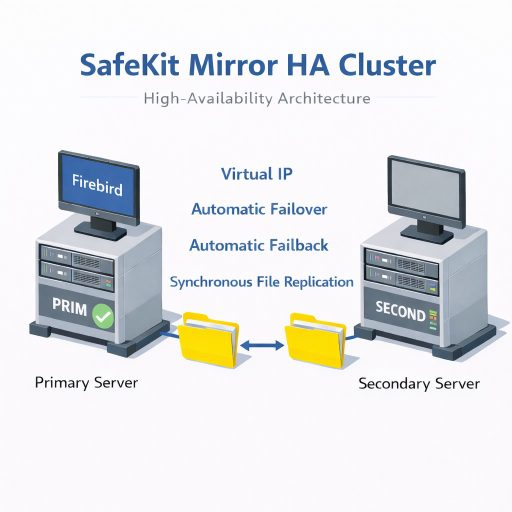
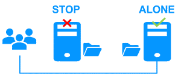

The Simplest Firebird High Availability: 2-Node Synchronous Replication & Failover
How the SANless SafeKit Mirror Cluster Works with Firebird
SafeKit for Firebird delivers seamless High Availability while significantly reducing TCO (Total Cost of Ownership). By eliminating the hardware and operational overhead of traditional clustering, SafeKit offers a lean, 2-node HA alternative to complex clustering solutions.
- All-in-One Business Continuity: A complete solution providing Virtual IP , Automatic Failover , Automatic Failback , and Real-time replication in a single, integrated package.
- Synchronous Replication (Zero Data Loss): Ensure absolute data integrity for transactional applications with synchronous replication, guaranteeing 0 data loss in the event of a failure.
- Flexible File-Level Protection: SafeKit performs host-based replication at the file level, which is completely transparent for the application. It protects not just databases, but all associated folders and data. You can replicate existing folders exactly where they are installed, even on the system disk.
- Simplified Deployment (No AD/LDAP): Unlike traditional clusters, there is no need for AD/LDAP directory configuration , removing complex installation requirements and infrastructure dependencies.
- Zero SAN Investment for HA: Achieve full redundancy using shared-nothing architecture. It works with standard local disks, removing the need for expensive SAN hardware, fiber channel switches, and specialized storage maintenance.
- True 2-Node Efficiency: While most solutions require a third “witness” node to prevent split-brain, SafeKit delivers a robust 2-node cluster , saving 33% on hardware, power, and rack space.
- Hardware-Agnostic Redundancy: Avoid vendor lock-in. Build your High Availability cluster using any server brand or internal storage type, extending the lifecycle of existing hardware and lowering replacement costs.
- Cost-Predictable Licensing: SafeKit provides High Availability via a one-time perpetual license, ensuring predictable budgeting and eliminating the risk of annual price hikes.
By consolidating High Availability into a lightweight software layer, SafeKit delivers enterprise-grade redundancy and business continuity for Firebird at a fraction of the cost of traditional clustering suites.

SafeKit HA Mirror Cluster for Firebird
⚡ Quick mirror cluster installation guide for Firebird >
Table of Contents
- How the SafeKit software simply implements a SANless Firebird high availability cluster?
- How the SafeKit mirror cluster works with Firebird?
- SafeKit High Availability Limitations
- Comparison: SafeKit for Firebird vs. Other Clustering Solutions
- Video Guide: Configuring a SafeKit Mirror HA cluster
- 🔍 SafeKit High Availability Navigation Hub
How the SafeKit software simply implements a SANless Firebird high availability cluster?
What is the SafeKit Mirror HA solution for Firebird?
SafeKit brings high availability to Firebird between two servers of any brand.
This article explains how to implement quickly a Firebird cluster without shared storage on a SAN and without specific skills.
The principle of the solution is to define the folders where the Firebird application data resides, its services, a virtual IP, and checkers.
SafeKit then implements real-time replication and automatic failover to ensure continuous service availability.
Why choose a unified All-in-One HA solution over fragmented tools?
Unlike “bolt-on” solutions that combine separate products for replication and clustering, SafeKit integrates Virtual IP, Automatic Failover, Automatic Failback and Real-time File Replication into a single engine.
This eliminates the “house of cards” risk where OS updates break fragile links between disparate tools, provides a single point of accountability for the entire HA stack, and reduces human error by providing a single interface for Firebird HA.
Should I choose high availability at the application level or the virtual machine (VM) level?
With SafeKit, you have the flexibility to choose the redundancy model that fits your needs.
VM-level redundancy (for Hyper-V or KVM) is the simplest to implement as it replicates the entire virtual machine, requiring no knowledge of the internal application.
Alternatively, application-level redundancy is more granular; it only replicates specific data folders and restarts the application services rather than the entire OS.
While VM-level HA is easier to set up, application-level HA is hypervisor-agnostic and can run across physical, virtual, or cloud environments.
What are the distinctive advantages of SafeKit Firebird high availability compared to competitors?
SafeKit differentiates itself from traditional Firebird clusters through its shared-nothing architecture and simplified deployment. While most enterprise solutions require complex replication deployment or expensive SAN storage, SafeKit provides:
- Synchronous Replication with Zero Data Loss: SafeKit implements 100% synchronous replication, ensuring total data integrity for transactional applications. In the event of a failure, there is zero data loss (RPO=0). Furthermore, SafeKit is capable of replicating not only the Firebird databases but any other data folders (logs, configuration files, etc.), ensuring the entire environment is mirrored.
- Simplified 2-Node Clustering: Unlike standard clusters that often require a “witness” (a 3rd node, disk, file share) to maintain a quorum, SafeKit delivers full high availability with just two redundant servers, reducing infrastructure costs and complexity.
Learn more about our heartbeat and quorum mechanism. - Unified Management: Administrators can manage Firebird failover, data replication, and monitoring through a single SafeKit console. This makes high availability accessible to teams without specialized “cluster admin” expertise.
- Custom Checkers: SafeKit goes beyond basic service monitoring; it offers checkers to monitor the health of the Firebird process. The system is highly extensible, allowing for the addition of custom checkers tailored to your environment.
How does SafeKit reduce the TCO (Total Cost of Ownership) for Firebird compared to standard clustering?
Unlike traditional high-availability solutions, SafeKit is designed to operate with the absolute minimum infrastructure overhead , without compromising reliability. Key savings compared to traditional failover cluster include:
- Zero Storage Costs: SafeKit uses a shared-nothing architecture that works with local disks. This removes the need for expensive SAN hardware, iSCSI networks, or complex vSAN configurations.
- No Enterprise Edition Required: While native replication mechanim may require expensive Enterprise licensing, SafeKit does not need the Enterprise edition. It works seamlessly with standard edition and even the free edition , providing high-end availability at a fraction of the cost.
- True 2-Node Efficiency: Unlike standard clusters that often require a “witness” (a 3rd node, disk, or file share) to maintain a quorum, SafeKit delivers full high availability with just two redundant servers.
- No Forced Subscriptions: SafeKit offers a perpetual license. You own your software, avoiding the “subscription trap” and unpredictable annual price hikes common with modern cloud-only or subscription-based models.
- Low Operational Expense (OPEX): As a plug-and-play solution, it requires no specialized training or expensive external consultancy for maintenance, unlike complex open-source clustering tools.
- CPU-Independent Pricing: Licensing is independent of the number of CPUs or cores. With just two licenses for two nodes, you can protect Firebird against failures.
Is it possible to set up a Firebird mirror cluster without clustering skills?
Yes. This article explains how to quickly implement a Firebird mirror cluster without the need for specialized SAN management or complex HA clustering skills. By using SafeKit’s automated failover scripts to handle the replication and restart of Firebird , you get a robust redundancy solution that is significantly simpler to deploy and maintain than traditional clustering solutions.
Beyond Firebird, which applications and environments can SafeKit protect?
SafeKit is a versatile high-availability solution for both Windows and Linux. It enables synchronous real-time replication and automatic failover for a wide range of critical workloads, including:
- Virtual & Physical Environments: Complete Hyper-V or KVM virtual machines.
- Container Orchestration: Docker, Podman, and K3s (Kubernetes) environments.
- Data & Services: Individual file directories, services, and various databases.
- Cloud Infrastructure: High availability for Cloud applications.
SafeKit also provides Farm Clusters with native Network Load Balancing and Failover for stateless applications like Web Servers.
💡 Explore the full list of supported HA solutions here.
How the SafeKit mirror cluster works with Firebird?
Step 1. Real-time replication
Server 1 (PRIM) runs the Firebird application. Clients are connected to a virtual IP address. SafeKit replicates in real time modifications made inside files through the network.

The replication is synchronous with no data loss on failure contrary to asynchronous replication.
You just have to configure the names of directories to replicate in SafeKit. There are no pre-requisites on disk organization. Directories may be located in the system disk.
Step 2. Automatic failover
When Server 1 fails, Server 2 takes over. SafeKit switches the virtual IP address and restarts the Firebird application automatically on Server 2.
The application finds the files replicated by SafeKit uptodate on Server 2. The application continues to run on Server 2 by locally modifying its files that are no longer replicated to Server 1.

The failover time is equal to the fault-detection time (30 seconds by default) plus the application start-up time.
Step 3. Automatic failback
Failback involves restarting Server 1 after fixing the problem that caused it to fail.
SafeKit automatically resynchronizes the files, updating only the files modified on Server 2 while Server 1 was halted.

Failback takes place without disturbing the Firebird application, which can continue running on Server 2.
Step 4. Back to normal
After reintegration, the files are once again in mirror mode, as in step 1. The system is back in high-availability mode, with the Firebird application running on Server 2 and SafeKit replicating file updates to Server 1.

If the administrator wishes the application to run on Server 1, this can be done manually through the web console at an appropriate time, or automatically through configuration.
How to configure a SafeKit Mirror Cluster for Firebird?

The SafeKit web console provides an intuitive interface to orchestrate high availability for your critical applications. In just a few steps, you can configure a SafeKit mirror cluster to ensure business continuity:
- Application Failover (Macros Tab): Define the specific application services to be automatically restarted in the event of a failure.
- Heartbeat network(s): Dedicated communication path(s) used by cluster nodes to continuously monitor each other’s health and availability and synchronize failover decisions.
- Virtual IP Management: Set up the Virtual IP (VIP) for transparent client reconnection after a failover.
- Real-Time Replication: Select the critical directories for host-based, synchronous byte-level replication.
- Checkers: Monitor the application’s health and trigger automatic recovery if a process failure is detected.
The SafeKit cluster includes a dedicated split-brain checker to resolve network isolation issues without the need for a third witness machine or an additional heartbeat network. Learn more about heartbeat, failover and quorum in a cluster.
How to monitor a SafeKit mirror cluster for Firebird?

The SafeKit management console offers a unified view of your high availability infrastructure. It allows administrators to monitor the operational state of the cluster and track data synchronization in real-time.
For a 2-node mirror cluster, the console clearly displays the roles of each server:
- PRIM (Primary): The active node currently running the application and managing the Virtual IP. It performs writes to the local storage and real-time replication to the secondary node.
- SECOND (Secondary): The standby node receiving synchronous byte-level updates. It is ready to take over instantly if the Primary fails.
- ALONE State: Visually alerts you when the cluster is running on a single node (e.g., during maintenance or after a failure), indicating that redundancy is temporarily lost.
- Resynchronization Progress: When a failed node recovers, its status turns orange during background data reintegration, ensuring no downtime during the “return to normal” phase.
Beyond simple status icons, the interface provides one-click failover orchestration , allowing you to manually reassign the primary role for planned maintenance while ensuring continuous availability for user activity.
SafeKit High Availability Limitations
| Limit / Requirement | Reason & Impact | Recommended Alternative |
|---|---|---|
| Replication size: A few TBs | Resynchronization time after failure (step 3): • 1 Gb/s network ≈ 3 hours / TB • 10 Gb/s network ≈ 1 hour / TB (depending on disk write performances) |
• Use external shared storage (more expensive, more complex). |
| File count: < 1,000,000 files | • Resynchronization time performance after a failure (step 3). • Time to check each file between both nodes. |
• Put the many files to replicate in a virtual hard disk / virtual machine. • Only the files representing the virtual hard disk / virtual machine will be replicated and resynchronized in this case. |
| Failover capacity: ≤ 32 VMs | • Each VM runs in an independent mirror module. • Maximum of 32 mirror modules running on the same cluster. |
• Use an external shared storage and another VM clustering solution (more expensive, more complex). |
| Network architecture: LAN/VLAN network between remote sites | • Automatic failover of the virtual IP address with 2 nodes in the same subnet. • Good bandwidth for resynchronization (step 3). • Low latency for synchronous replication: typically < 5 ms RTT; higher values should be validated against the application’s write rate. |
• Use a load balancer for the virtual IP address if the 2 nodes are in 2 subnets (supported by SafeKit, especially in the cloud). • Use backup solutions with asynchronous replication for high latency network. |
Comparison: SafeKit for Firebird vs. Other Clustering Solutions
| Feature | SafeKit for Firebird | Shared Storage Failover Clustering | Database Replication |
|---|---|---|---|
| Architecture | SANless (Shared-Nothing) | Shared Storage (SAN/NAS) | Shared-Nothing |
| Application Reconfiguration | None (Runs in-place) | Required (Move Data to Shared Disk) | None |
| Replication Scope | Whole Application (DB + Config + Logs) | Shared Disk Data | Database Data Only |
| Replication Type | Synchronous (Zero RPO) | Synchronous (via SAN) | Depends on Editions (Often Async) |
| Failover/Failback Logic | Fully Automatic | Fully Automatic | Often Manual or Complex |
| AD/LDAP Dependency | Independent (No AD required) | Required on Windows (Active Directory) | Independent |
| Deployment Complexity | Low (< 30 Minutes) | High (AD, Storage, Quorum) | Medium (Replication Only, No Failover) |
In summary , by eliminating the need for a SAN and simplifying deployment—removing dependencies such as Active Directory and specialized Quorum configurations—SafeKit offers a lean, hardware-agnostic HA alternative. This results in a significantly lower TCO while ensuring that your Firebird environment remains resilient with zero data loss and automated recovery.
Video Guide: Configuring a SafeKit HA mirror cluster
SafeKit Video: Application-Level Clustering (8:47)
In this video, discover how SafeKit implements a mirror HA cluster without the complexity of a SAN. While this demonstration uses Microsoft SQL Server, the solution works identically for other databases and applications.
Chapters
- 🎬 2 nodes with SQL Server (0:32)
- 🎬 Configure the cluster and the mirror.safe module (3:58)
- 🎬 Start and test SQL replication, migration, failover on crash (4:17)
Step-by-Step Implementation
- 🛠️ Read the guide on setting up a mirrored cluster on Windows
- 🛠️ Read the guide on setting up a mirrored cluster on Linux
🔍 SafeKit High Availability Navigation Hub
Explore SafeKit: Features, technical videos, documentation, and free trial
| Resource Type | Description | Direct Link |
|---|---|---|
| Key Features | Why Choose SafeKit for Simple and Cost-Effective High Availability? | See Why Choose SafeKit for High Availability |
| Use Cases | Explore How SafeKit Ensures the High Availability of Critical Infrastructure | See All Use Cases (OEM Software, Edge Servers, SCADA, and more) |
| Deployment Model | All-in-One SANless HA: Shared-Nothing Software Clustering | See SafeKit All-in-One SANless HA |
| HA Strategies | SafeKit: Infrastructure (VM) vs. Application-Level High Availability | See SafeKit HA & Redundancy: VM vs. Application Level |
| Technical Specifications | Technical Limitations for SafeKit Clustering | See SafeKit High Availability Limitations |
| Videos | SafeKit: High Availability Configuration & Failover Demos | See SafeKit Failover Tutorials |
| Architecture | How the SafeKit Mirror Cluster works (Real-Time Replication & Failover) |
See SafeKit Mirror Cluster: Real-Time Replication & Failover |
| Architecture | How the SafeKit Farm Cluster works (Network Load Balancing & Failover) | See SafeKit Farm Cluster: Network Load Balancing & Failover |
| Competitive Advantages | Comparison: SafeKit vs. Traditional High Availability (HA) Clusters | See SafeKit vs. Traditional HA Cluster Comparison |
| Technical Resources | SafeKit High Availability: Documentation, Downloads & Trial | See SafeKit HA Free Trial & Technical Documentation |
| Pre-configured Solutions | SafeKit Application Module Library: Ready-to-Use HA Solutions | See SafeKit High Availability Application Modules |